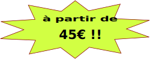

Le Débosselage
Le débosselage sans peinture s'exerce en massant la tôle par de multiples micro-impulsions, un savoir-faire méticuleux qui permet de retirer la bosse sans abîmer la peinture.
Le débosselage sans peinture permet de réparer tout type de bosses sur les carrosseries automobiles :
- Les impacts de grêle
- Les coups de portière
- Les coups de caddie
- Divers projectiles (balle, ballon, cailloux ...)
Le débosselage sans peinture présente donc plusieurs avantages :
- Rapidité et qualité : un temps d'intervention limité pour un résultat aussi probant qu'en carrosserie traditionnelle
- Respect de l'environnement : pas de peinture, donc pas de solvant ni diluant chimique
- Immobilisation limitée, qualité d'origine et cote maximale de votre véhicule préservées !!